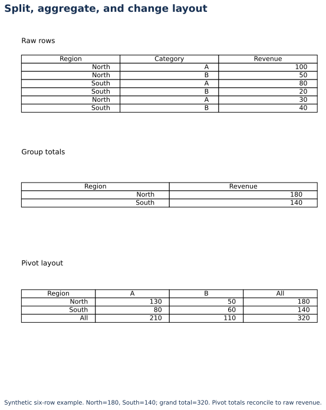

Lecture 13: Grouped Analysis
Group By operations, aggregations, and pivot tables — the course path from raw rows to “sales by region / product category” style insights (and the same pattern for accidents by region / weather).
1. Learning Objectives
- 1 Apply split–apply–combine with Pandas
groupby. - 2 Compute multiple aggregations (sum, mean, count, median) per group.
- 3 Build pivot tables for two-dimensional summaries.
- 4 Answer business questions like “casualties by region and weather.”
- 5 Avoid common groupby mistakes (wrong grain, implicit NaN groups).
2. Group By (Split–Apply–Combine)
- Split rows into groups by key(s) — e.g., region.
- Apply an aggregation — sum of casualties, mean speed limit.
- Combine results into a summary table.
df.groupby("region")["casualties"].sum()
df.groupby("region").agg(
accidents=("accident_id", "count"),
total_casualties=("casualties", "sum"),
avg_vehicles=("vehicles", "mean"),
)3. Pivot Tables
Pivot = groupby with rows × columns layout (like Excel PivotTable).
pd.pivot_table(
df,
index="region",
columns="weather",
values="casualties",
aggfunc="sum",
fill_value=0,
margins=True,
)Use pivots for cross-tabs stakeholders already understand. Use groupby when you need long format for charts or further joins.
4. Practical (Course practice: by region / category)
On sample_accidents.csv:
- Total casualties and accident count by
region. - Mean vehicles by
road_type. - Pivot: rows = region, columns = severity, values = count of accidents.
- Which region–weather cell has the highest total casualties?
5. Common Mistakes
- Aggregating at the wrong grain (e.g., averaging already-averaged rates)
- Forgetting
observed=Truewith categorical filters - Hidden NaN group keys
- Sorting alphabetically when ranking by metric is needed
SQL: the same grouped question
SQL is useful when source data live in relational tables. This SQLite query uses the tables created by the downloadable lab; it is not a standalone connection to an external database.
WITH regional AS (
SELECT r.Region, SUM(s.NetRevenue) AS revenue,
COUNT(DISTINCT s.OrderID) AS orders
FROM sales AS s
JOIN regions AS r ON s.RegionKey = r.RegionKey
WHERE s.OrderDate >= '2024-01-01'
GROUP BY r.Region
HAVING SUM(s.NetRevenue) > 0
)
SELECT Region, revenue, orders, revenue/orders AS average_order_value,
RANK() OVER (ORDER BY revenue DESC) AS revenue_rank
FROM regional
ORDER BY revenue_rank;WHERE filters input rows; HAVING filters grouped results. Here only positive-revenue region groups remain. A CTE names a query result, and the window rank keeps one result row per region. Nulls are checked with IS NULL; COALESCE substitutes a documented fallback.
6. Knowledge Check
Q1. Best tool to show total casualties by region (rows) and weather (columns)?
7. Summary
- Groupby = flexible long summaries; pivot = matrix summaries.
- Always define the grain of the question first.
- Syllabus practical: sales (or accidents) by region / category.
Worked practice: Learn SQL and aggregation together
Run SQLite SELECT, WHERE, JOIN, GROUP BY, HAVING, CASE, a CTE and a window function in the lab. Reconcile grouped totals against Pandas and a pivot table.
Interpretation check: NULL comparisons use IS NULL, not = NULL. Joins can duplicate rows; check key cardinality and aggregation grain before interpreting totals.
Download runnable/guided lab: L13 SQL and Aggregation Lab
Setup, all labs, datasets, DAX measures and capstone guidance · Interactive retail teaching report
Split, aggregate, and change layout


Interpret: What is the pivot grand total?
320.
Read diagram labels (mobile text)
- Region
- Category
- Revenue
- North
- A
- 100
- North
- B
- 50
- South
- A
- 80
- South
- B
- 20
- North
- A
- 30
- South
- B
- 40
- Raw rows
- Region
- Revenue
- North
- 180
- South
- 140
- Group totals
- Region
- A
- B
- All
- North
- 130
- 50
- 180
- South
- 80
- 60
- 140
- All
- 210
- 110
- 320
- Pivot layout
- Split, aggregate, and change layout
- Synthetic six-row example. North=180, South=140; grand total=320. Pivot totals reconcile to raw revenue.
Your reading progress
Completion is self-reported reading progress, not a mastery score. Use the lab and interpretation checks to assess understanding.